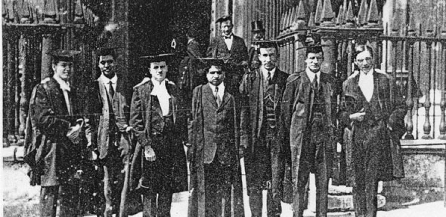

Srinivasa Ramanujan (FRS)
The Man Who Knew Infinity ∞
Srinivasa Ramanujan FRS was an Indian mathematician who lived during the British Rule in India. Though he had almost no formal training in pure mathematics, he made substantial contributions to mathematical analysis, number theory, infinite series, and continued fractions, including solutions to mathematical problems then considered unsolvable.
Here's a time line of Ramanujan's life:
- 1887 - Ramanujan was born into a Tamil Brahmin Iyengar family in Erode, Madras Presidency (now Tamil Nadu, India), at the residence of his maternal grandparents.
- 1892 - Ramanujan was enrolled at the local school. After his maternal grandfather lost his job as a court official in Kanchipuram, Ramanujan and his mother moved back to Kumbakonam and he was enrolled in Kangayan Primary Schoo.
- 1902 - As a child prodigy at the age of 14 Ramanujan received merit certificates and academic awards that continued throughout his school caree. He completed mathematical exams in half the allotted time, and showed a familiarity with geometry and infinite series. Ramanujan was shown how to solve cubic equations where he developed his own method to solve the quartic.
- 1910 - After a meeting between the 23-year-old Ramanujan and the founder of the Indian Mathematical Society, V. Ramaswamy Aiyer, Ramanujan began to get recognition in Madras's mathematical circles, leading to his inclusion as a researcher at the University of Madras.
- 1912 - Ramanujan had his work published in the Journal of the Indian Mathematical Society, where he elaborate his work on elliptic integrals, hypergeometric series, divergent series & other series as well. (Know more)
- 1913 - Narayana Iyer, Ramachandra Rao and E. W. Middlemast tried to present Ramanujan's work to British mathematicians. The first two professors, H. F. Baker and E. W. Hobson, returned Ramanujan's papers without comment.On 16 January 1913 Ramanujan wrote to G. H. Hardy.On 8 February 1913 Hardy wrote Ramanujan a letter expressing interest in his work, adding that it was "essential that I should see proofs of some of your assertions".
- 1914 - Most of British mathematician rejected his work as there was no prove, but Dr. Hardy & Littlewood encourage him and started his life as mathematician next to Dr. Hardy in Cambridge.
- 1916 - After his grate sruggle for recognition he was able to elected to the London Mathematical Society by submitting an 50 page long unusual research paper.
- 1917 - On 6 December he was elected a Fellow of the Royal Society.
- 1918 - He was elected "for his investigation in Elliptic functions and the Theory of Numbers." On 13 October 1918 he was the first Indian to be elected a Fellow of Trinity College.
- 1919 - At the age of 32 he died of plagued.
- Achivements - Ramanujan's contributuion on infinite series is unimaginable. His books where kept in museum where his works are yet to be understand. All of his work gave a tremendous value to mathematics. Some of recent scientist belives that his equations could solve the mystery of black hole. Though it is hypothetical.
"Every positive integer was one of [Ramanujan's] personal friends."